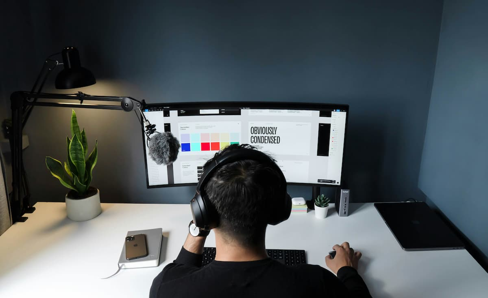
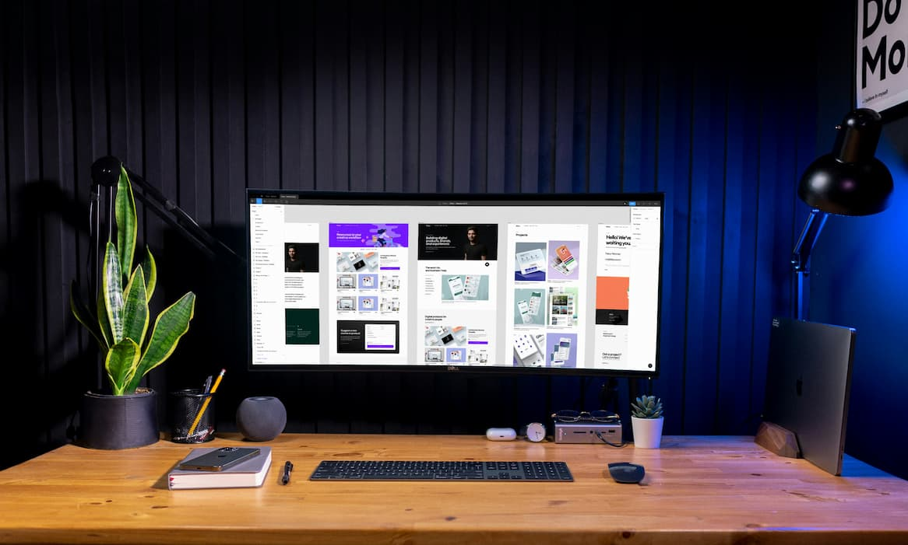
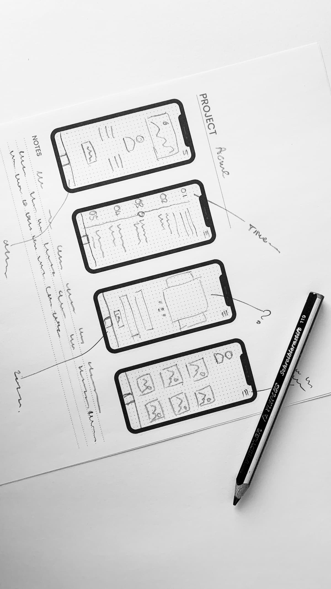
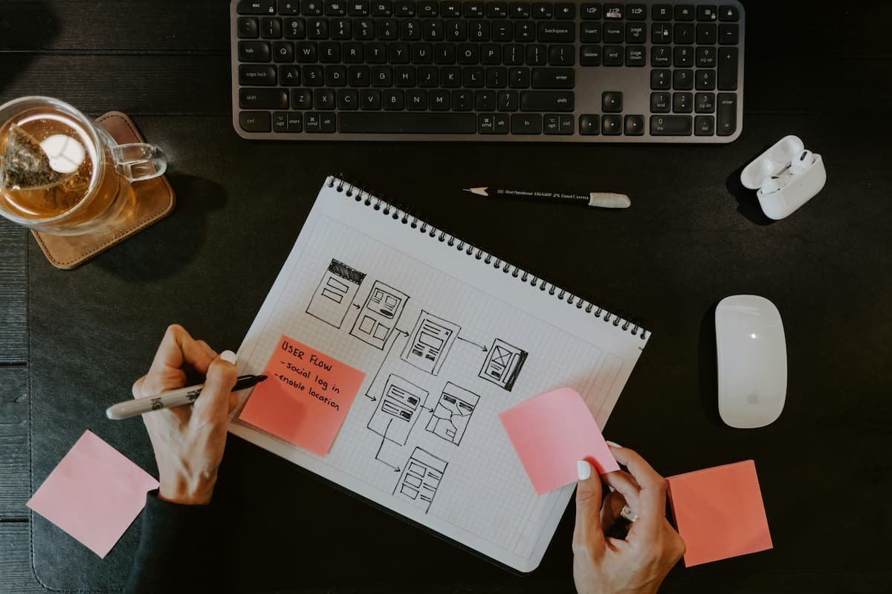
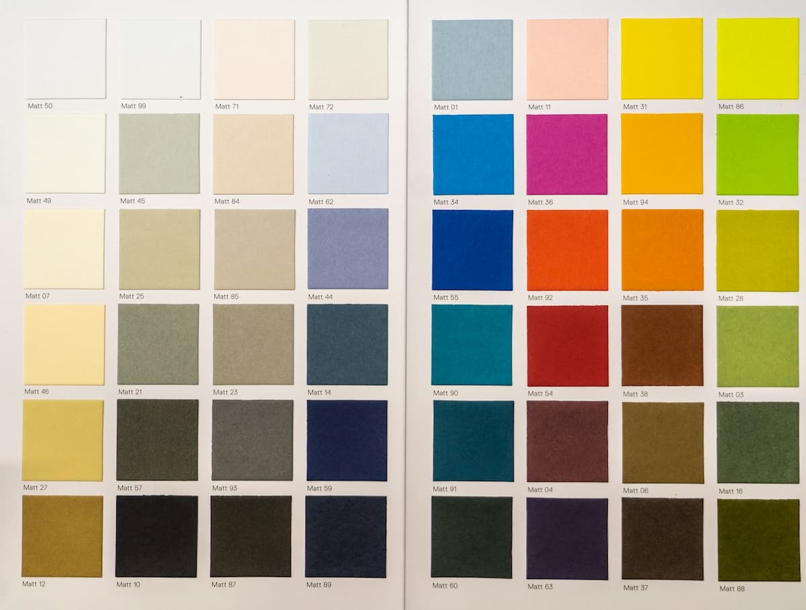
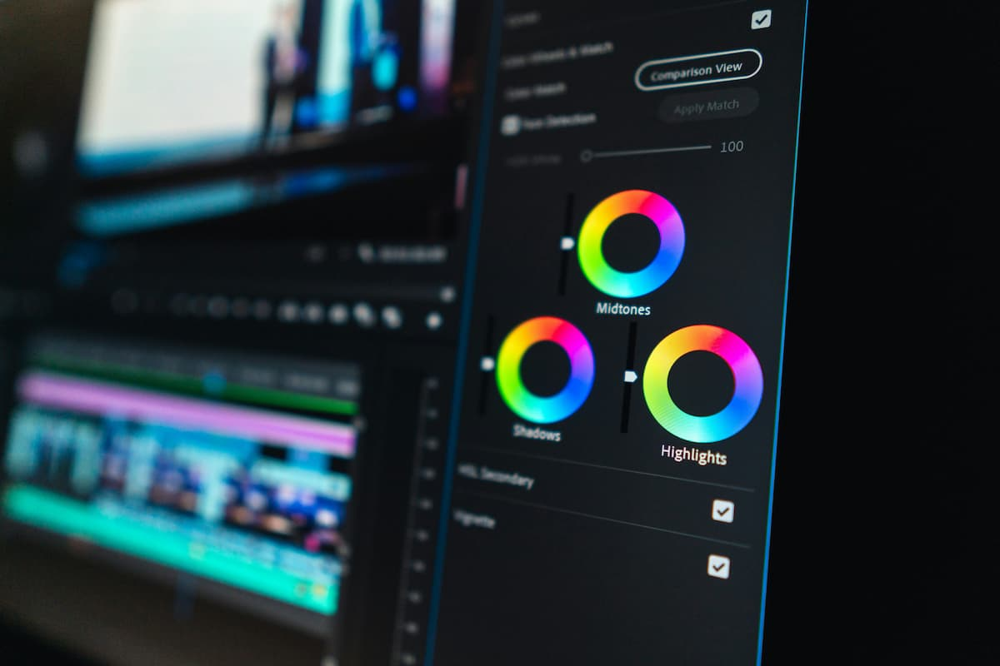

Перейти до основного вмісту
Медіагалерея
Ілюстрації до теми

Автор: Faizur Rehman, Unsplash License

Автор: Faizur Rehman, Unsplash License

Автор: Glen Carrie, Unsplash License

Автор: Kelly Sikkema, Unsplash License

Автор: Mika Baumeister, Unsplash License.

Автор: Peter Stumpf, Unsplash License
Векторна графіка
Етапи проєктування інтерфейсу
Відео
Розташування
↑